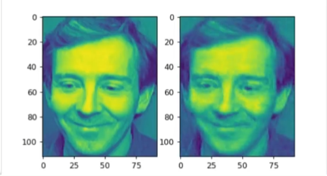
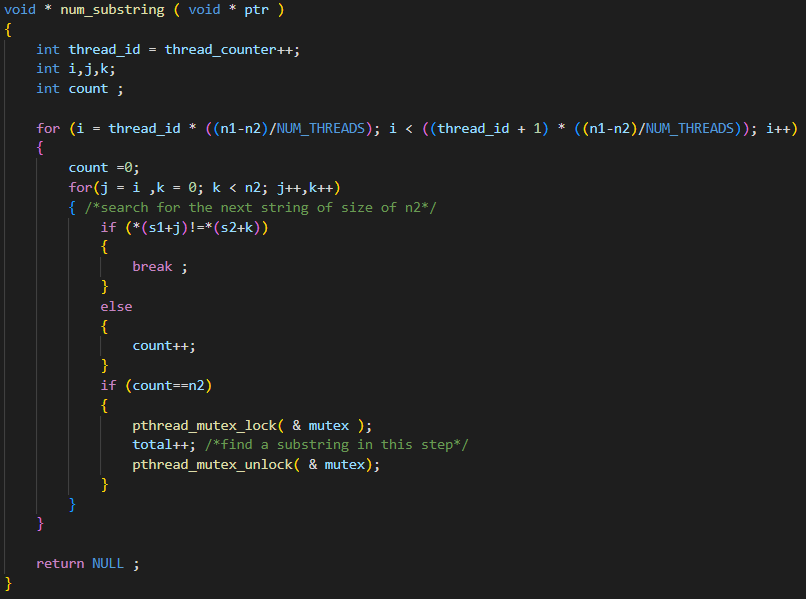
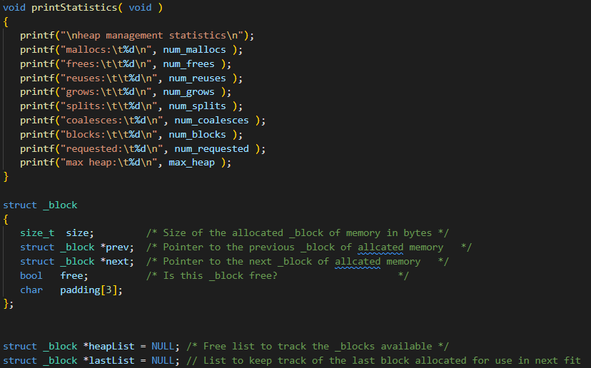

Listed below are a few of the projects I have worked on. Each
project has icons that show what tech was used, the project name,
a short description, and a link to a more detailed description.
UTA Reviews
UTA Reviews, an Android app written in Java meant to compete
with RateMyProfessor, allowed verified UTA students to rate
and review all UTA staff (over 5,000). Students as well as
teachers could then reply to the reviews to take it even
farther.
Learn more

Mavs Arboretum
Mavs Arboretum is a C++ storefront that utilizes
object-oriented programming, gtkmm for GUI, SCRUM development
with weekly sprints.
Learn more

Facial reconstruction in Python
Facial reconstruction in Python.
Learn more

Multithreaded Substring Search in C
In this program, substring searches are performed in text files in a multithreaded manner. Multithreading was used to improve the efficiency of searching for substrings within large strings. POSIX thread libraries were used to support multiple threads.
Learn more

Memory Allocation in C
In this project I implemented my own algorithms for First Fit, Next Fit, Best Fit, and Worst Fit. AS well as my own malloc, calloc, realloc, free, and growHeap.
Learn more